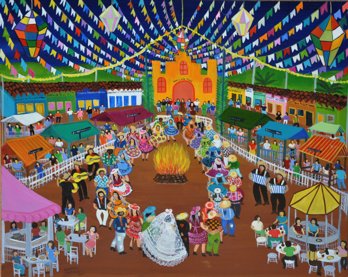

A cultura do Nordeste brasileiro é rica e diversificada, sendo uma das regiões mais emblemáticas e importantes do país em termos culturais. É conhecida por suas tradições folclóricas, música, danças, festas populares, gastronomia e artesanato. Vou destacar alguns aspectos dessa cultura:
1. Música: O Nordeste é famoso por seus ritmos contagiantes, como o forró, o baião, o frevo, o maracatu e o xaxado. Grandes nomes da música nordestina, como Luiz Gonzaga, Jackson do Pandeiro, Alceu Valença e Elba Ramalho, ganharam destaque nacional e internacional.
2. Danças: As danças folclóricas são uma parte importante da cultura nordestina. O forró, por exemplo, é uma dança animada e sensual que representa a alegria e a animação do povo nordestino. O frevo, típico de Pernambuco, é uma dança frenética que faz parte do Carnaval de Recife e Olinda.
3. Festas populares: O Nordeste é conhecido por suas festas tradicionais, cheias de cor, música e religiosidade. O Carnaval é uma das celebrações mais importantes da região, com destaque para o Carnaval de Salvador, em que trios elétricos percorrem as ruas da cidade. Outra festa famosa é o São João, comemorado em junho, que celebra os santos juninos e é marcado por fogueiras, comidas típicas, quadrilhas e música.
4. Gastronomia: A culinária nordestina é muito saborosa e influenciada por elementos indígenas, africanos e europeus. Pratos como a tapioca, o acarajé, a buchada de bode, a carne de sol, o cuscuz e o baião de dois são exemplos da diversidade gastronômica da região.
5. Artesanato: O artesanato nordestino é reconhecido pela sua qualidade e variedade. Destacam-se os trabalhos em cerâmica, couro, renda, bordado e madeira. O barro de Caruaru, em Pernambuco, é famoso pelas esculturas de artistas populares que retratam cenas do cotidiano nordestino.
Além disso, é importante ressaltar que o Nordeste tem uma forte identidade cultural, marcada pela resistência e pela expressão da sua gente. Essa região do Brasil possui uma história rica, influências diversas e um povo acolhedor que contribui para a formação da identidade cultural brasileira.